CECyTE Uruapan.
CECyTE Uruapan se destaca como un centro educativo líder en preparar a los jóvenes para el futuro tecnológico. Con un enfoque innovador en programación y tecnologías emergentes, ofrecemos una educación integral que combina teoría y práctica. Nuestro compromiso con la excelencia y nuestra sólida comunidad educativa aseguran que cada estudiante no solo aprenda, sino que también se desarrolle plenamente para enfrentar los desafíos del mañana.
Eventos.
En CECyTE Uruapan, la convivencia y el compañerismo son valores fundamentales que cultivamos a través de una variedad de eventos y actividades escolares. Desde competencias académicas hasta eventos deportivos y culturales, fomentamos un ambiente inclusivo y colaborativo donde los estudiantes pueden crecer juntos. Nuestra comunidad se une en cada ocasión, celebrando el éxito de cada alumno y fortaleciendo vínculos que perduran más allá del aula. En CECyTE Uruapan, cada evento es una oportunidad para aprender, crecer y disfrutar juntos.
 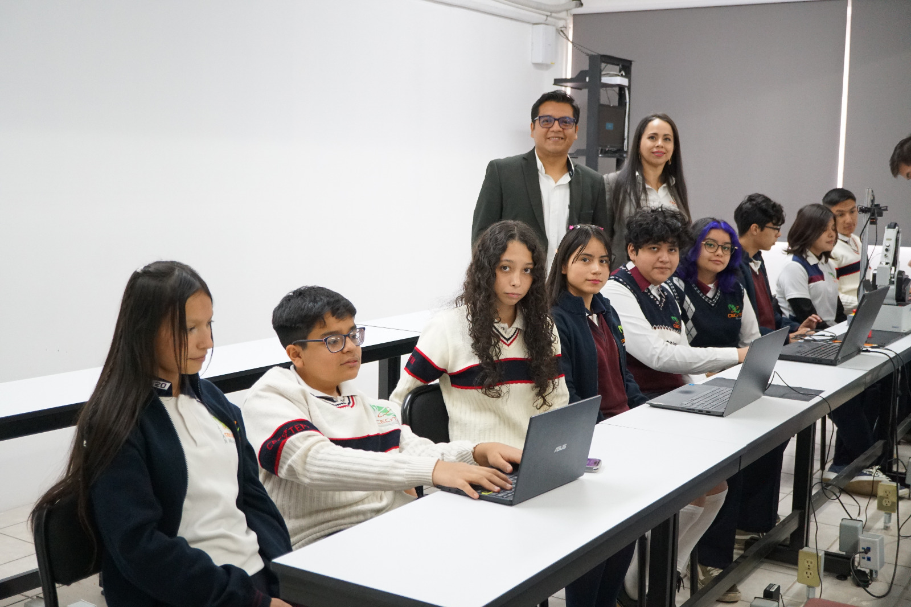
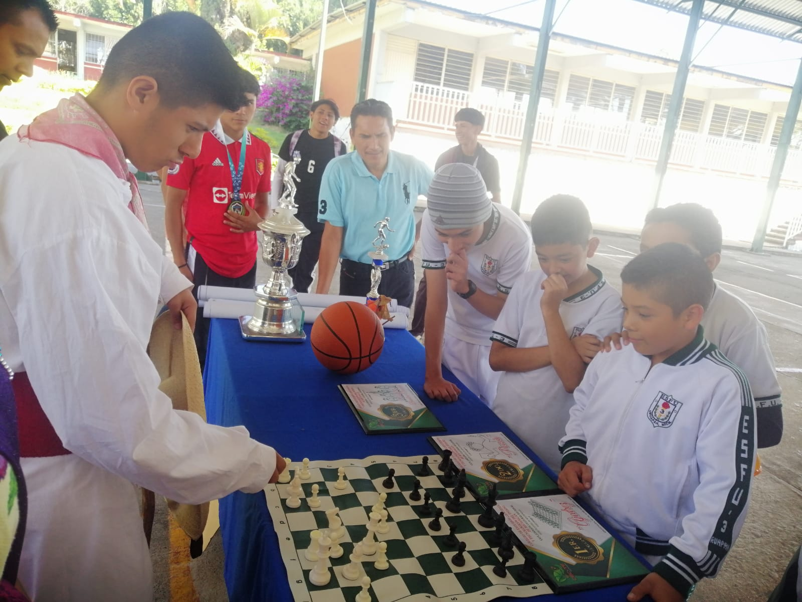
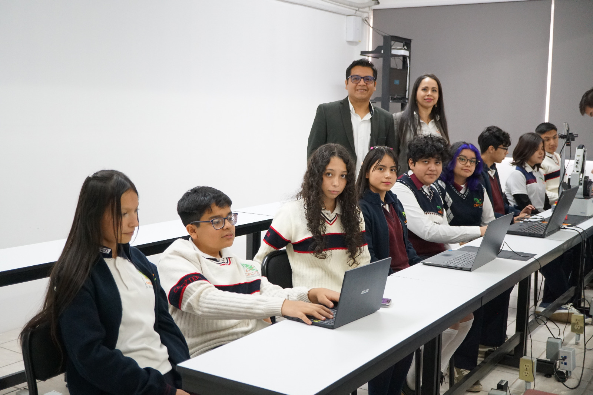
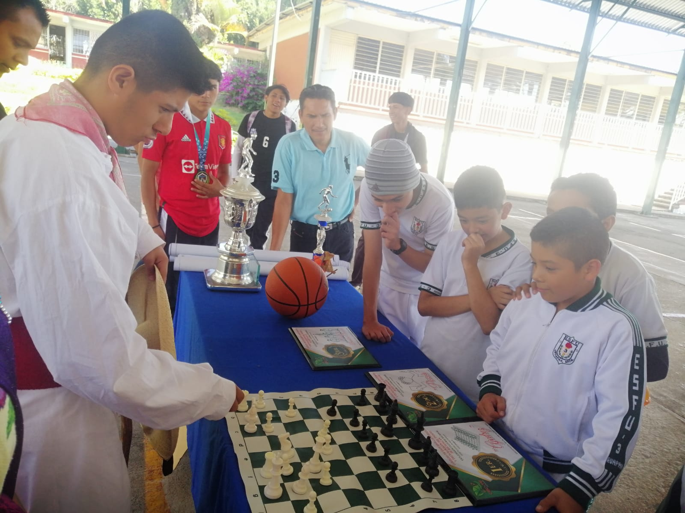
 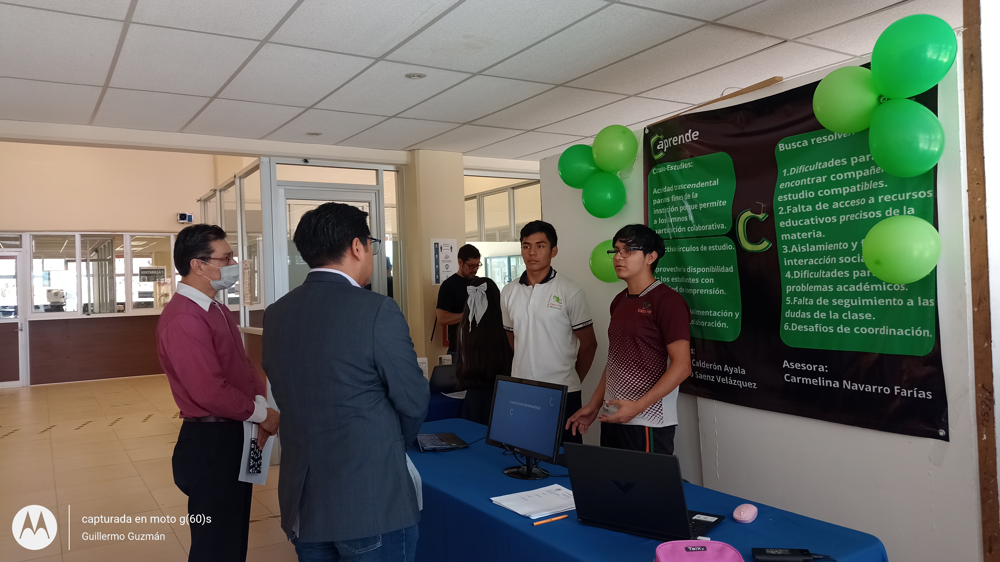
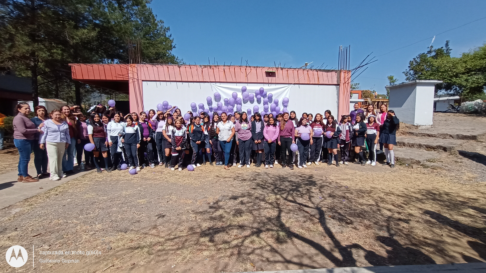
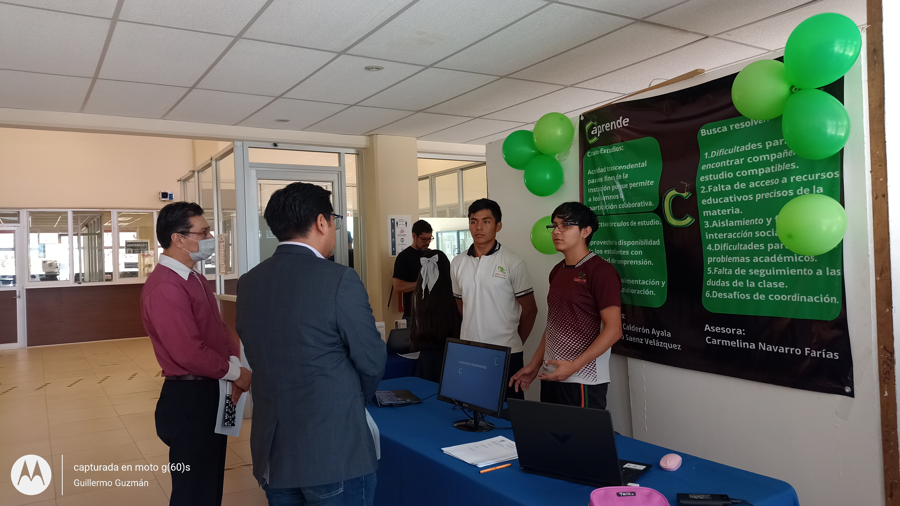
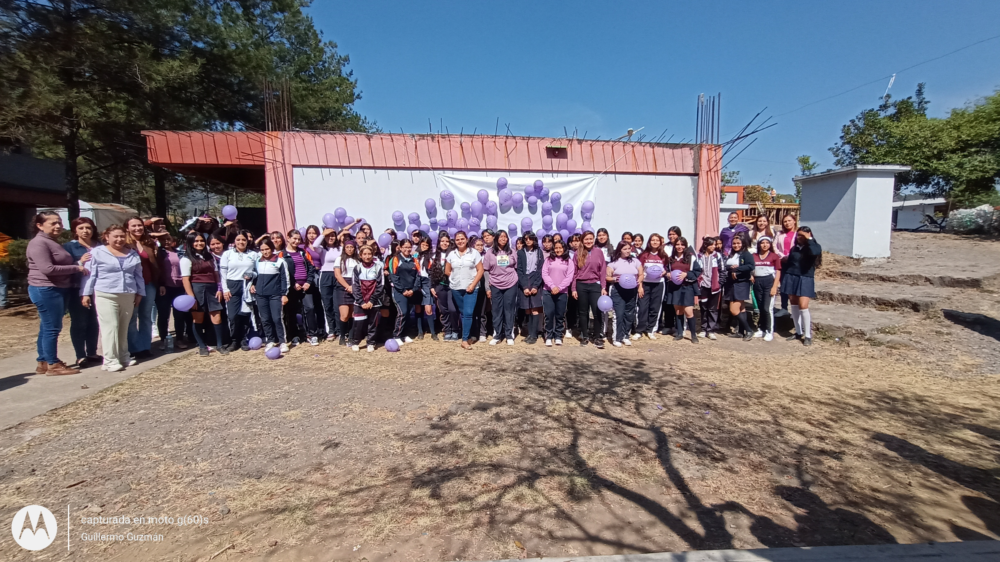
Profesores y plan de estudios.
Nuestros profesores en el CECyTE Uruapan son líderes apasionados y expertos en su campo. Con una sólida formación académica y una dedicación inquebrantable, guían a nuestros estudiantes hacia el éxito en tecnología y programación. Su compromiso con el desarrollo integral de los alumnos crea un ambiente de aprendizaje inspirador y colaborativo, preparando a los estudiantes para triunfar en un mundo moderno en constante cambio.
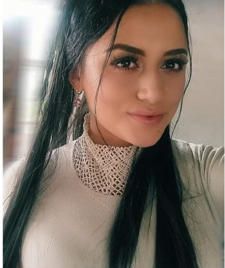Mtra. Abigail Villa Rodigrez
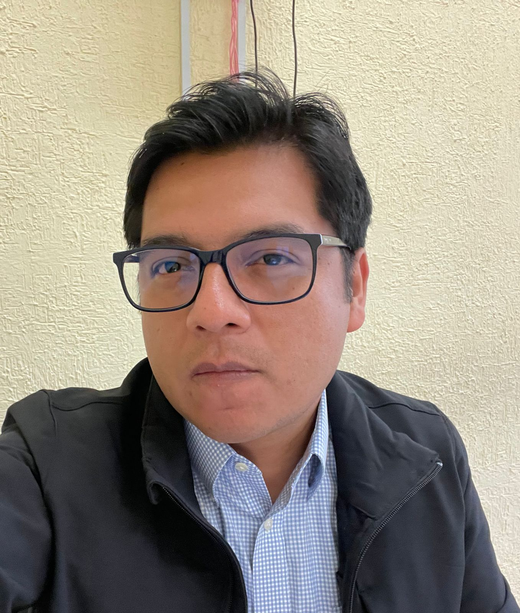Mtro. Enrique Suciapa
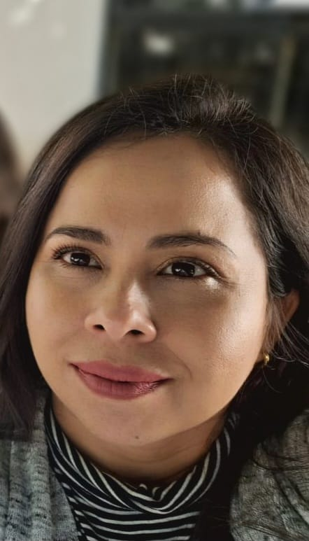Mtra. Carmelina Navarro Farias
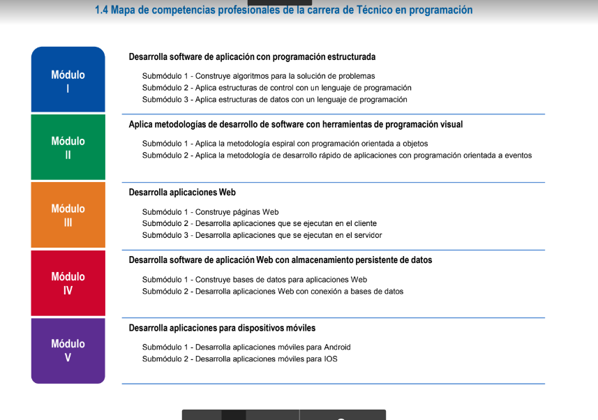Descargar
{kind=link}
Materias a cursar
En el CECyTE Uruapan, los estudiantes de preparatoria que aspiran a una carrera en programación inician su camino educativo con una base sólida en matemáticas y ciencias, cursando materias como Álgebra, Química y TICS en el primer semestre. A medida que avanzan, se sumergen en temas más especializados, tales como el desarrollo de software con programación estructurada y visual. En los semestres posteriores, el currículo se intensifica con cursos como Cálculo, Física y finalmente, desarrollo de software web y aplicaciones móviles, integrando tecnologías avanzadas y metodologías actuales. Este enfoque garantiza que los estudiantes no solo adquieran conocimientos teóricos, sino también habilidades prácticas esenciales para su futuro profesional en el dinámico campo de la tecnología y la programación.
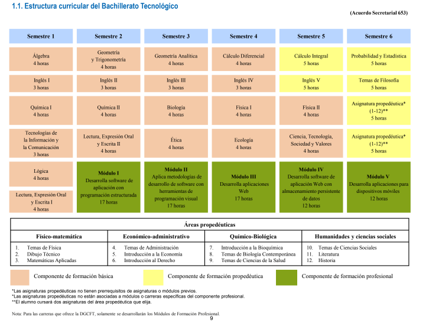Descargar
{kind=link}